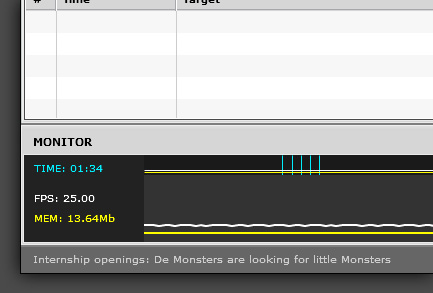

Memory / FPS Monitor
The monitor function shows the framerate of the movie (white) and the memory consumed by the Flash Player (yellow).
Note: The memory function is a bit experimental due to the fact that De MonsterDebugger uses “System.totalMemory” on the client side.
This property returns the total amount of memory that’s being used by all the Flash Player instances on your system.
